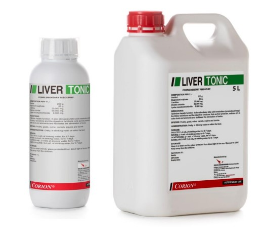
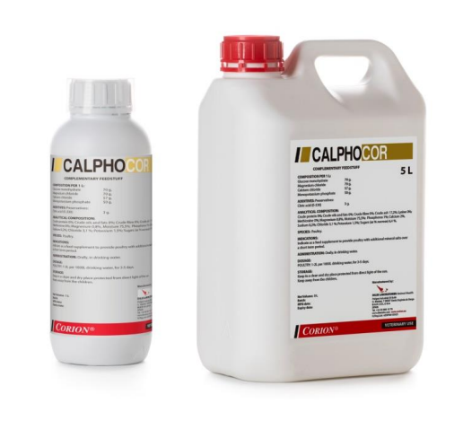
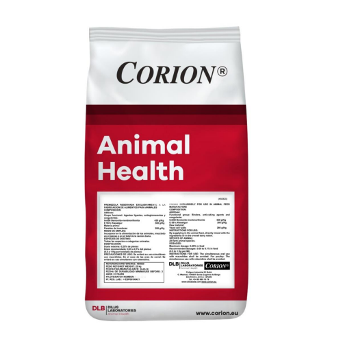
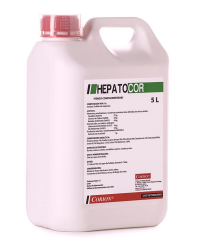
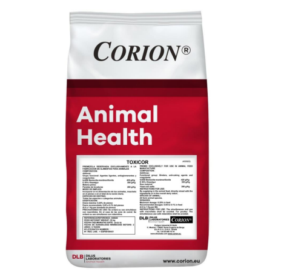
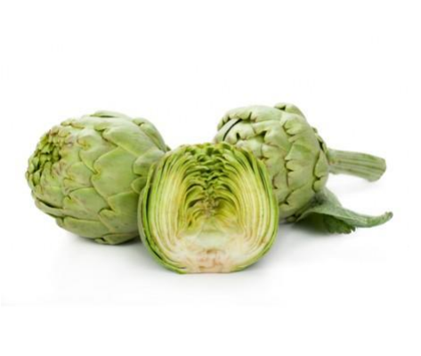
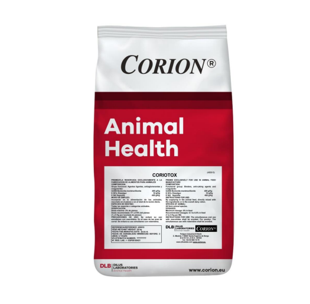

Liver Tonic
Protector hepático

Coriocox FM
Mejora la salud intestinal

Calphocor
Mejora de la cáscara del huevo

Coriocox L
Mejora la salud intestinal

Coriofung
Conservante de alimentos

Hepatocor
Protector hepático

Suin Protect
Frena las diarreas

Toxicor
Aglutinante de toxinas

Vitasisol
Protector hepático

Coriotox
Secuestrante de microtoxinas


¿Quienes Somos?
Somos una empresa peruana especializada en la distribución y comercialización de insumos de alto valor para nuestros clientes en la Industria Pecuaria.
Nuestra Misión es incrementar el valor de nuestros clientes, ofreciéndoles alternativas innovadoras que le permitan generar eficiencias y obtener alta rentabilidad en su negocio, con el mejor servicio.
Nuestra Visión es ser socios estratégicos de nuestros clientes.